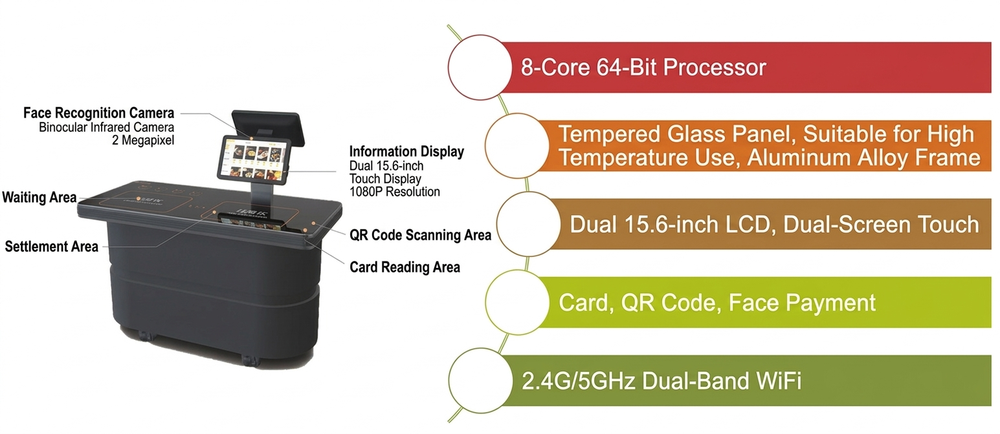

Just Place It. Checkout Complete.
Place RFID-embedded dishware on the checkout counter to instantly recognize all items and totals.
A fast, accurate, and reliable checkout method used in cafeterias worldwide.

How RFID Checkout Works
RFID chips embedded in the dishware are read instantly by the counter's reader — a simple and reliable checkout method.
Choose Dishes with RFID Dishware
Each dish has an embedded RFID chip. Simply choose your food and place it on the tray. No special operation needed.
Place on Counter for Auto-Recognition
Place the tray on the counter and the built-in reader scans all RFID chips in under 1 second, displaying items and totals on screen.
Pay via Face / QR / IC Card
Complete cashless payment with face recognition, QR code, IC card, or your preferred method. Smooth and seamless.
RFID Smart Checkout Counter
Fast, stable, and accurate. The RFID smart checkout counter with a proven track record in cafeterias worldwide.

RFID Smart Checkout Counter
Dual 15.6" 1080P Touchscreens
- Reads 30+ dishes in under 1 second
- IC card / QR code / face recognition payment
- Voice and light guidance (natural voice)
- WiFi / TCP/IP (Ethernet) communication
- Ideal for set-meal and small-dish style cafeterias
- Add or remove items on-screen before payment
About RFID Dishware
Dedicated dishware combining durability for repeated use with flexibility to rewrite menu data on demand.
High Durability
RFID dishware is dishwasher-safe and designed for repeated use. Chips are sealed in the dish bottom, resistant to water and impact. Reliable for long-term use.
Smart Dispenser Writing
Use the smart dispenser to write menu information (item name and price) to the dish's chip. Set different menus and prices per meal — the same dish can serve breakfast, lunch, and dinner.
Batch Writing
Supports batch writing of menu data to multiple dishes at once. Prepare large quantities quickly, dramatically improving cafeteria operational efficiency.
Key Features
Fast & Accurate
Reads 30+ dishes in under 1 second with 99%+ recognition accuracy. Delivers reliable and stable checkout.
Proven Track Record
Adopted by universities, corporations, and hospital cafeterias worldwide. A trusted system backed by years of real-world operation.
Management Platform
Centralized web-based management for menu items, cafeteria data, order details, and sales analytics. Supports data-driven operations.
Auto-Recognition & Checkout
Just place the dishes and items with prices appear automatically. No staff operation needed — fully automated checkout.
Multiple Payment Options
Supports face recognition, QR code, and IC card. Flexible payment methods to suit all users.
Order Correction
Add or remove items on-screen before payment. Ensures accurate billing and peace of mind for users.
Technical Specifications
| Item | Specification |
|---|---|
| CPU | 64-bit 8-core CPU |
| Storage | 16G FLASH, 2G DDR3 |
| Display | Dual 15.6" 1080P touchscreens |
| QR Scanner | QR Code, Code 128/39, etc. — 360° rotation |
| Face Recognition Camera | Dual infrared camera, 2MP |
| RFID Reading | 30+ items at once, read time under 1 second |
| Contactless Card | M1/CPU card, ISO/IEC14443 compliant |
| Communication | Ethernet 10/100Mbps, WiFi 2.4GHz, Bluetooth 4.0 |
| Voice Guide | Natural voice guidance |
| Dimensions | 1475×650×1100mm (counter type) |
Experience the Power of RFID Checkout
Just place it and checkout is complete — experience the speed and accuracy with a live demo.
Contact us for a free demo, POC consultation, or to request materials.